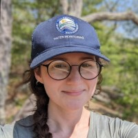

About the author
 I’m an environmental scientist with a passion for using programmatic approaches to solve environmental data challenges. I specialize in data visualization, geospatial analysis, and workflow automation, with a strong background in both programming (Program R, Javascript) and digital mapping (ArcGIS, QGIS, Leaflet).
Over the years, I’ve coordinated large-scale environmental programs, leveraging my skills in R, JavaScript, and geospatial tools to enhance environmental monitoring efforts. I’m particularly skilled in transforming complex datasets into actionable insights, whether through interactive web maps or automated report-building.
Currently, I work as an Environmental Analyst at the Connecticut Department of Energy and Environmental Protection, where I coordinate CT's three volunteer water monitoring programs. I focus on streamlining data QA, management, analysis, visualization, and mapping processes to improve organizational efficiency and communicate program results with a variety of stakeholders.
Please feel free to explore my portfolio to see some of my key projects and accomplishments!